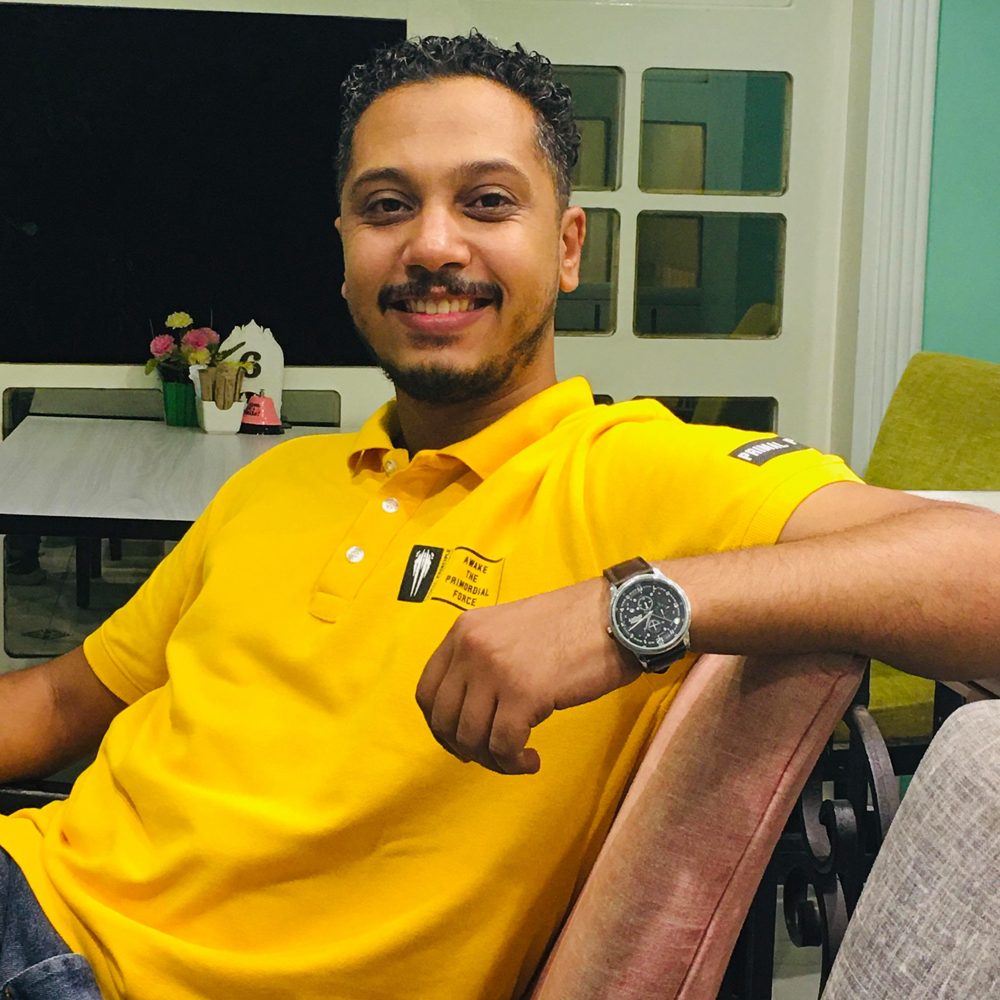

Sherif Kamal

Objective:
I' am seeking a challenging position with a reputable organization that enables me to further develop and enhance my experience and become an active participant in the organization success.
Experience:
-
Senior IT Administrator for GET Group Holdings
Jan 2022 - Present
- Planning, implementing and migrating TFS to Azure Devops.
- Virtualization using Hyper-V including deployment & administration.
- Planning, implementing of VM failover Site Replication.
- Maintain, recovery site for Business Critical services.
- Managing and implementing backups and recovery through (Synology).
- Administrative experience and knowledge of Microsoft (DPM).
- Managing and deploying patching security updates through WSUS & from endpoint Central.
- Familiarity with enterprise level implementation of server technologies, SAN & NAS Storage.
- Administrative experience and knowledge of Cloud (AWS) services.
- Design a Network Security Groups (NSGs) to control inbound and outbound access to network interfaces (NICs), VMs and subnets in (AWS).
- Working knowledge of IT / Cybersecurity Framework (ISO 27001).
- Planning, implementing and improving system policies and configurations.
- Evaluate and recommend security improvements and system upgrades.
- Installation and maintain security products, such as, anti-virus, Virtual Private Network, Security Information and Event management.
- Troubleshoot (Microsoft Defender) issues with the on boarding.
- Managing and maintaining BitLocker in place.
- Maintain and administrate all IT documents in place.
-
IT Administrator for GET Group Holdings
Feb 2019 - Jan 2022
- Responsible for providing technical support for office staff to ensure their IT needs are met.
- Ensure all IT queries are addressed in a timely and efficient manner.
- Monitor computer systems, networks performance and equipment performance records to determine whether adjustments need to be made.
- Test computer hardware, networking and operating system software. Perform regular system updates.
- Administer and troubleshoot Applications, Operating systems and other communication equipment.
- Responsible for all IT systems to perform effectively.
- Fix and report on any technical issues faced by office staff.
- Communicate recurring issues to Corporate IT and provide recommendations for resolution of issues.
- Support the accurate implementation of IT plan and adherence to budget in coordination with Corporate IT and report on any deviations.
- Research and provide recommendations on the most preferable external hardware/software supplier to be utilized and maintain good relationship with suppliers.
- Ensure all IT activities/ processes meet Corporate IT standards.
- Perform any other related job duties as requested by direct supervisor.
-
Service Desk Senior Specialist for Wadi Group
Jul 2018 - Feb 2019
- Responding to requests for support within published time frames.
- Interacting with WADI Group staff in a respectful and courteous manner.
- Requesting feedback for opportunities for improvement.
- Striving to ensure customer satisfaction.
- Continuously working to improve the quality of service.
- Installation, configuration and maintenance of software and hardware components.
- Provide computer operations and technical support for all client locations and networks.
- Assist in the implementation of new projects.
- Responsible for setting up, coordinating, and monitoring the operation of computer equipment and systems.
- Monitor systems to detect needs for repair and implement solutions to prevent customer calls and complaints ensuring efficient provisioning of services.
- Receive customer complaints via e-mails/phone calls, open trouble tickets and work on solution identification and implementation to minimize disruptions and downtime.
- Cascade unsolved tickets to concerned entities as needed to ensure efficient resolution.
- Monitor customer satisfaction in term of responsiveness time and repair time to detect customer opinions and work on improvement plans.
- Managing all active directory services of all users.
- Support Microsoft Exchange server.
- Installing and configuring PCs (desktops and laptops).
- Supporting hardware, software and network troubleshooting.
- Managing all printer services via print server.
- Managing sharing and security of file server and all shared folder, sub-folders, files and ability to recover Corrupted shared folders and files via network and applied all policy on file servers.
- Supporting of Anti-virus server.
- Server workstation and client side.
- Installing open VPN client side with VPN certificate.
- Acting as a first line support.
-
IT Help Desk for Premier Services & Recruitment
Mar 2016 - Jul 2018
- Installing and configuring computer software operating systems and applications.
- Installing Microsoft dynamics ax.
- Supporting outlook issues and solving any problems related.
- Monitoring and maintaining computer systems.
- Troubleshooting system and network problems and diagnosing and checking hardware or software faults.
- Providing support, including procedural documentation and relevant reports.
- Following diagrams and written instructions to repair a fault or setup a system.
- Supporting the roll-out of new applications.
- Setting up new user's accounts and profiles and dealing with password issues.
- Testing and evaluating new technology.
- Conducting electrical safety checks on computer equipment.
-
IT Printing Support for QNB
Oct 2015 - Mar 2016
- Managing Web Jet Admin Server and printers on them.
- Installation, Configuration, Troubleshooting and Maintenance More Than 1000 Network Printer and local Printer.
- Answer user inquiries regarding printer's software or Hardware to resolve problems.
- Prepare periodical reports and IT Documentation.
-
Maintenance Engineer for Quality Egypt
Nov 2013 - Mar 2016
- Hardware Maintenance for end-user or company client.
- Install and Managing Windows server and all operation associated with it.
- Installing, Configuring and Administering Microsoft Windows 7, 8 & 10 Office 2007 & 2010 & 2013.
Skills:
- Problem Analysis And Problem Solving : ⭐️⭐️⭐️⭐️⭐️
- Organizational Skills : ⭐️⭐️⭐️⭐️⭐️
- Established and maintained contacts with new and existing customers : ⭐️⭐️⭐️⭐️⭐️
- Initiative Strong Interpersonal-Communication skills : ⭐️⭐️⭐️⭐️⭐️
- Helped customers place new orders easily : ⭐️⭐️⭐️⭐️⭐️
Courses:
- (MCSA) Microsoft Certified Solutions Associate.
- (CCNA) Cisco Certified Network Associate.
- AWS Solutions Architect Associate.
- SQL Query.
- Servicing HP Desktops, Workstations and Notebooks.
- HP Accredited Platform Specialist.
Education:
Bachelor's Degree
Quality control From Workers University, Egypt
Graduation Year: 2015
Grade: Very Good